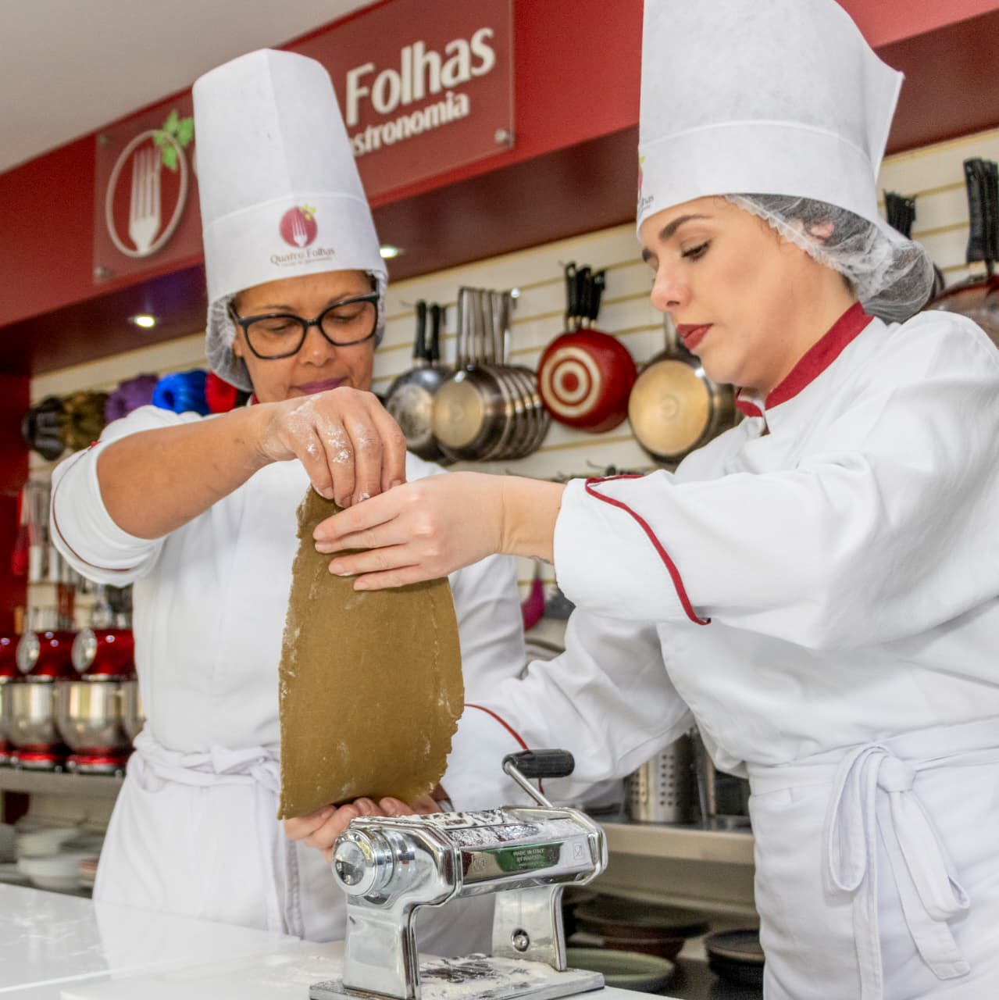
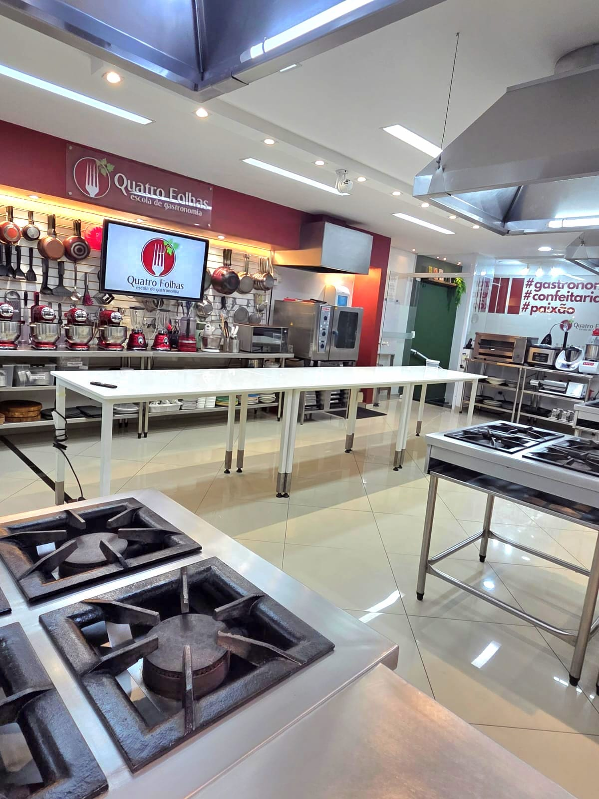

Curso profissionalizante
Últimas vagas de 2026
Descubra como cozinhar como um chef e esteja preparado para atuar no mercado.
100% do curso é prático. Você aprende preparando através de fichas técnicas, que vão muito além de uma receita, em uma cozinha profissional com orientações de chefs experientes.
Estrutura
reconhecida Experiência
internacional
reconhecida Experiência
internacional
Tudo incluído no investimento
Todos os insumos utilizados nas aulas
Material didático profissional
Certificado de conclusão
Acesso ao app e portal do aluno
Início14 de setembro
Turma manhãSegundas · 8h30 às 12h
Turma noiteSegundas · 19h às 22h30
Vídeo da experiência Quatro Folhas
De R$ 14.565,24 por
12x de R$ 850
Campanha válida até 31/08/2026 · Restam poucas vagas nesta condição.
Alunos formadosHistórias que começaram dentro da nossa cozinha.
Anos de mercadoExperiência dedicada à formação gastronômica.
Professores pós-graduadosProfissionais atuantes e próximos dos alunos.
Horas práticasAprendizado construído preparando e executando.
O que essa formação possibilita
Você sairá preparado para...
Desenvolver técnica, segurança e visão profissional para escolher diferentes caminhos na gastronomia.
Uma escolha completa
Por que escolher a Quatro Folhas?
Formação prática com estrutura, acompanhamento e recursos que apoiam sua evolução dentro e fora da sala de aula.
*Experiência internacional sujeita a condições específicas e pagamento à parte.

Seu próximo passo
Imagine onde você pode estar daqui a alguns meses...
Trabalhando em restaurantes
Abrindo seu negócio
Cozinhando com técnica e confiança
Com certificado e orientação de chefs experientes
Formação completa
Conteúdo direto, prático e conectado ao mercado
Conheça os principais eixos da formação de maneira rápida e objetiva.
Bases da cozinha
Organização, segurança, cortes, cocções e fundamentos profissionais.
Confeitaria
Técnicas, acabamentos e equilíbrio aplicado aos preparos.
Panificação
Massas, fermentação e domínio dos processos essenciais.
Carnes
Seleção, cortes, pontos, cocções e aproveitamento.
Massas
Produção, técnicas, molhos e combinações profissionais.
Cozinha brasileira
Ingredientes, tradições e técnicas da nossa identidade.
Cozinha internacional
Repertório, referências e técnicas de diferentes culturas.
Descontos em aulas
Condições especiais para alunos em aulas temáticas selecionadas.
Quer entender como esses módulos preparam você para atuar profissionalmente?
Conversar com um consultorUma escolha que acompanha seu crescimento
Fazer valer o seu investimento a cada aula.
Seu sonho merece uma formação à altura: prática de verdade, estrutura profissional, ingredientes de excelência e experiências que ampliam seu repertório dentro e fora da cozinha.

Estrutura reconhecida
Uma cozinha preparada para ensinar — e também para as câmeras
O espaço já recebeu gravações e produções ligadas a Globoplay, Batalha dos Confeiteiros, Bake Off Brasil e outros projetos gastronômicos.
Experiência internacional
Buenos Aires amplia a sala de aula
Alunos dos cursos profissionalizantes contam com uma vivência gastronômica em Buenos Aires e aula especial preparada para o grupo Quatro Folhas.*
*Valor pago à parte.Ingredientes de excelência, entre os melhores do mercado
Cada preparo utiliza produtos criteriosamente selecionados para que o aluno reconheça qualidade, desenvolva técnica e alcance resultados de padrão profissional.
App e portal do aluno
Materiais, comunicados, pagamentos e certificados organizados para apoiar sua formação também fora da aula.
Aprenda em um ambiente próximo da realidade profissional
Bancadas, equipamentos e organização de cozinha pensados para desenvolver segurança, ritmo e autonomia.
O processo
Aprender, praticar, ser orientado e aperfeiçoar.
O resultado
Mais técnica, segurança e autonomia na cozinha.
Escolha seu horário
A mesma formação em duas opções de turno
As duas turmas têm aulas às segundas-feiras e seguem o mesmo programa de 32 encontros práticos.
Segundas-feiras
8h30 às 12h
Para quem prefere aprender e praticar no início do dia.
Segundas-feiras
19h às 22h30
Uma opção pensada para conciliar a formação com a rotina profissional.
Condição especial
Comece sua formação em setembro
A campanha promocional é válida até 31 de agosto de 2026. Fale com nossa equipe para consultar disponibilidade no turno escolhido.
Campanha promocionalaté 31/08/2026
Valor normal R$ 14.565,24
12x R$ 850no cartão de crédito · total promocional R$ 10.200,00
Consulte outras formas de pagamento.
Economia de R$ 4.365,24 em relação ao valor normal.
Quero verificar minha vagaCondição sujeita à disponibilidade de vagas e confirmação da matrícula até a data da campanha.
Dúvidas frequentes
O que você precisa saber
Se ainda restar alguma dúvida, envie seus dados ou fale diretamente com nossa equipe pelo WhatsApp.
Preciso ter experiência para começar?
Não. O curso começa pelas habilidades básicas e evolui gradualmente para técnicas e experiências mais completas.
As 32 aulas são realmente práticas?
Sim. O formato prático é um dos principais diferenciais do Chef Profissional: o aluno aprende executando os preparos em cozinha equipada.
Quais são os dias e horários?
As aulas acontecem às segundas-feiras. A turma da manhã estuda das 8h30 às 12h e a turma da noite, das 19h às 22h30.
Quando começam as aulas?
O início previsto para as duas turmas é 14 de setembro de 2026.
O que está incluído no investimento?
Estão incluídos todos os insumos utilizados nas aulas, o material didático profissional, o certificado de conclusão e o acesso ao app e ao portal do aluno.
Quais são as formas de pagamento?
Até 31/08/2026, a campanha oferece a condição de 12 parcelas de R$ 850,00 no cartão de crédito. Consulte nossa equipe para conhecer outras formas de pagamento.
Contato com a escola
Verifique a disponibilidade da sua vaga
Este formulário é destinado a quem tem interesse em conhecer o curso e avaliar a matrícula. Ao preencher, você solicita o contato da nossa equipe pelo WhatsApp informado.
Atendimento individual com um consultor da Quatro Folhas.
Orientações sobre turma, investimento e formas de pagamento.
Contato em breve pelo WhatsApp informado no cadastro.
Solicitar contato da equipe
Preencha seus dados para que um consultor entre em contato e converse com você sobre a matrícula.